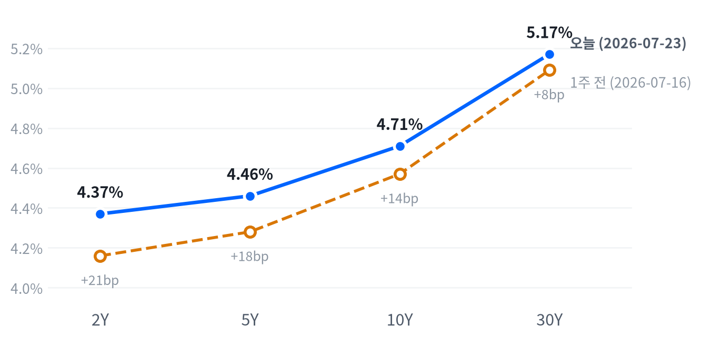

오늘 장을 관통한 동인은 두 갈래다. 하나는 메모리·AI인프라 그룹의 동반 셀오프로, 한국발(서울 증시) 삼성전자·SK하이닉스 급락 여파가 프리마켓부터 반영되며 마이크론(-6.99%)·웨스턴디지털(-6.90%)·시게이트(-6.75%)가 동반 급락했고, 코히런트(-9.84%)·루멘텀(-8.47%)·마벨(-7.21%) 등 광통신·반도체주도 하이퍼스케일러 AI 지출 지속가능성 우려 속에 크게 밀렸다. 다른 하나는 오전 11시경 파키스탄의 이란-미국 협상 중재 보도로 촉발된 유가 급락(WTI -1.87%, 브렌트 -2.29%)이다.
크로스에셋 흐름은 대체로 정합적이다. 유가 급락이 인플레이션 우려를 일부 상쇄하며 국채금리(10Y 4.71%, 야후 동일자 스팟 4.68%)의 추가 상승을 눌러줬고, 이는 대형 우량주 중심의 다우 반등(+0.46%)을 뒷받침했다.
다만 금(+0.22%)은 유가 하락과 함께 인플레이션 기대가 낮아지는 국면에서도 오히려 상승해 다소 예외적이었는데, 국채금리가 오전 고점을 찍기 전 이른 새벽 시간대의 안전자산 수요가 더 크게 반영된 결과로 짐작된다. 섹터 로테이션 측면에서는 부동산(+2.22%)·소재(+1.93%) 등 방어·실물자산 섹터가 기술(-1.44%) 약세를 상쇄하며 지수 전반의 낙폭을 제한했다.
다음 촉매는 두 갈래로 갈린다. 파키스탄발 이란-미국 협상이 실제로 진전을 보이는지가 유가·금리 방향을 다시 흔들 변수이며, 협상이 결렬될 경우 유가 재급등과 함께 오늘 형성된 방어섹터 강세·성장주 약세 로테이션이 더 강화될 수 있다. 메모리·AI인프라 쪽에서는 이번 셀오프가 낸드 가격 우려에 따른 일시 조정인지 밸류에이션 되돌림의 시작인지가 다음 확인 포인트이며, 마이크론의 낮은 밸류에이션(선행 PER 6배 수준)이 부각되는지 지켜볼 필요가 있다.
| 지수 | 종가 | 등락 | 등락률 |
|---|---|---|---|
| S&P 500 Value | 231.36 | +2.06 | +0.90% |
| Dow | 51,947.25 | +235.60 | +0.46% |
| S&P 500 | 7,411.98 | +3.68 | +0.05% |
| Russell 2000 | 2,930.00 | -10.16 | -0.35% |
| S&P 500 Growth | 132.83 | -0.76 | -0.57% |
| Nasdaq | 24,975.82 | -161.87 | -0.64% |
| 섹터 | 종가 | 등락 | 등락률 |
|---|---|---|---|
| Real Estate | 45.95 | +1.00 | +2.22% |
| Materials | 51.26 | +0.97 | +1.93% |
| Consumer Staples | 84.13 | +0.92 | +1.11% |
| Comm. Services | 106.30 | +0.92 | +0.87% |
| Financials | 56.31 | +0.48 | +0.86% |
| Health Care | 162.57 | +1.13 | +0.70% |
| Consumer Disc. | 109.41 | +0.65 | +0.60% |
| Energy | 59.62 | +0.24 | +0.40% |
| Industrials | 182.66 | +0.72 | +0.40% |
| Utilities | 46.29 | +0.10 | +0.22% |
| Technology | 175.88 | -2.57 | -1.44% |
나스닥은 개장(25,101.02) 직후 매물이 쏟아지며 10:30에 저점(24,920.26, 시가 대비 -0.72%)을 찍었다. 인텔이 실적 발표 후 자본지출 부담 우려로 4%대 하락하고 전일 테슬라·인텔의 실적 후유증이 이어지며 반도체·기술주 전반이 짓눌린 여파였다(종합 보도). 정오(12:00) 무렵에는 고점(25,221.65, +0.48%)까지 낙폭을 만회했으나 오후 들어 다시 밀리며 종가는 24,975.82(-0.64%)로 3거래일 연속 하락 마감했다.
S&P500은 개장(7,406.30) 이후 정오 고점(7,460.98, +0.74%)까지 오른 뒤 오후 들어 상승분을 반납해 15:00 저점(7,396.53, -0.13%)까지 밀렸으나, 막판 낙폭을 다시 만회해 종가는 보합권인 7,411.98(+0.05%)로 마쳤다. 러셀2000은 나스닥과 비슷하게 10:30 저점(2,927.49, -0.75%)과 정오 고점(2,956.88, +0.24%)을 거쳤지만 반등폭이 작아 종가는 2,930.00(-0.35%)으로 약세 마감했다.
오전 11시경 파키스탄이 미국-이란 간 새 평화협상 중재 가능성을 검토 중이라는 보도가 나오며 국제유가가 급락했고(WTI 11:30 저점 시가 대비 -4.60%, 상세는 원자재 섹션 참조), 이 소식에 다우존스는 오전 낙폭을 만회하고 강하게 반등해 대형 우량주 위주 매수세가 유입됐다(Motley Fool/Yahoo 종합 보도). 대형주 비중이 큰 다우가 이 소식에 가장 크게 반응한 반면, 성장주·소형주 비중이 큰 나스닥·러셀은 메모리·AI인프라 그룹 셀오프의 직격탄을 벗어나지 못해 지수별 궤적 차이가 뚜렷했다.
엔비디아는 개장(207.56) 이후 정오 고점(211.91, +2.10%)까지 반등하며 유가 급락에 따른 위험자산 심리 개선을 함께 누렸으나, 오후 들어 메모리·AI인프라 그룹의 동반 약세가 이어지며 15:00 저점(204.81, -1.32%)까지 밀렸다가 소폭 만회해 종가는 -0.92%로 마감했다.
부동산(+2.22%)·소재(+1.93%)·필수소비재(+1.11%)가 상위권을 차지했다. 유가 급락에 따른 인플레이션 기대 완화와 실질금리 하락 기대가 배당·인컴 자산에 대한 매수 심리를 되살린 결과로 풀이되나, 2026-07-24 당일자를 특정한 1차 매체 확인까지는 이르지 못했다.
반면 기술(-1.44%)은 유일하게 1%대 하락한 섹터였다. 마이크론(-6.99%)·SK하이닉스(-8.34%) 등 메모리주와 코히런트(-9.84%)·마벨(-7.21%) 등 AI인프라·광통신주 동반 급락이 직접적인 배경이며, 하이퍼스케일러 AI 투자의 지속가능성에 대한 의문이 전일 알파벳 capex 쇼크의 연장선에서 재차 불거졌다.
국채금리(10Y 4.71%)가 2025년 1월 이후 최고치를 찍었음에도 증시 낙폭이 제한적이었던 점은 유가 급락이 인플레이션 우려를 일부 상쇄했기 때문이다. 포지셔닝 관점에서는 방어·실물자산 섹터의 상대강도가 다음 며칠간 이어지는지, 남은 실적 시즌에서 메모리·AI인프라 그룹의 추가 조정 여부를 확인 트리거로 삼을 필요가 있다.
| 만기 | 07-23 종가 | 전일比(bp) | 1주 전(07-16) | 주간 변화(bp) |
|---|---|---|---|---|
| 2Y | 4.37% | +6bp | 4.16% | +21bp |
| 5Y | 4.46% | +5bp | 4.28% | +18bp |
| 10Y | 4.71% | +4bp | 4.57% | +14bp |
| 30Y | 5.17% | +2bp | 5.09% | +8bp |

2Y·5Y·10Y·30Y 국채금리, 오늘(2026-07-23 FRED 기준)과 1주 전(2026-07-16) 비교. 전 구간 상승했으나 단기물 상승폭이 더 커 커브가 눌렸다.
2s10s 스프레드는 오늘(FRED 07-23 기준) +34bp로 1주 전(07-16) +41bp에서 7bp 줄었다. 전 구간 금리가 상승한 가운데 2Y가 +21bp로 10Y(+14bp)·30Y(+8bp)보다 더 크게 올라 전형적인 베어 플래트닝(bear flattening) 흐름이 한 주째 이어지고 있다.
일간 변화도 같은 방향이다(2Y +6bp > 5Y +5bp > 10Y +4bp > 30Y +2bp). 참고로 야후 파이낸스 동일자(07-24) 스팟금리는 10Y 4.68%, 5Y 4.43%, 30Y 5.16%로 FRED 07-23치보다 낮았는데, 이날 오전 유가 급락 소식이 채권시장에서도 금리 상승세를 일시적으로 눌러준 것으로 파악된다(장중 등락 요인, CNBC 보도 제목 기준).
포지셔닝 관점에서는 2Y 중심의 베어 플래트닝이 한 주째 지속되는 만큼 단기물 숏 듀레이션 전략이 여전히 유효하다. 다만 파키스탄발 이란-미국 협상이 실제 진전을 보이며 유가 하락이 굳어질 경우 인플레이션 압력이 누그러져 장기물 비중 확대를 검토할 확인 트리거가 될 수 있고, 반대로 협상이 결렬돼 유가가 재반등하면 손절 없이 단기 숏 듀레이션을 유지하는 편이 낫다.
| 통화쌍 | 종가 | 등락 | 등락률 |
|---|---|---|---|
| DXY | 101.46 | +0.03 | +0.03% |
| USD/KRW | 1,459.42 | -16.21 | -1.10% |
| USD/JPY | 163.79 | +0.71 | +0.44% |
| EUR/USD | 1.1375 | -0.0036 | -0.32% |
USD/JPY는 이른 시간대인 01:30에 고점(163.94, 시가 대비 +0.06%)을 찍은 뒤 좁은 박스권에서 오르내리다 16:00에 저점(163.64, -0.12%)을 형성했고, 종가(163.79)는 전일比 +0.44%로 마감했다. 높은 국채금리 수준이 하루 종일 엔화 약세 압력을 뒷받침한 흐름이다.
DXY(+0.03%)는 거의 보합권에 머물렀는데, 유가 급락에 따른 안전자산 수요 둔화와 국채금리 고공행진이라는 상반된 재료가 서로 상쇄된 결과다. USD/KRW(-1.10%, 원화 강세)는 달러 전반의 약보합 흐름과 다른 방향으로 크게 움직여 이날 FX 시장에서 페어별 온도차가 두드러졌고, EUR/USD(-0.32%, 유로 약세)는 DXY의 미세한 강세 방향에 부합했다.
| 품목 | 종가 | 등락 | 등락률 |
|---|---|---|---|
| WTI | $90.47 | -1.72 | -1.87% |
| Brent | $98.38 | -2.31 | -2.29% |
| Natural Gas | $2.908 | -0.008 | -0.27% |
| Gold | $4,055.70 | +9.10 | +0.22% |
최대 변동 품목은 Brent로 -2.29% 급락했고 WTI도 -1.87% 밀렸다. 오전 11시경 파키스탄이 미국-이란 간 새 평화협상 중재 가능성을 검토 중이라는 보도가 나오며 국제유가가 동반 급락했다(Motley Fool/Yahoo 종합 보도).
WTI는 자정 무렵(00:00) 고점(91.99, 시가 대비 +0.09%)을 찍은 뒤 오전 11:30에 저점(87.68, -4.60%)까지 낙폭이 확대됐고, 이후 낙폭을 일부 되돌려 종가는 90.47(-1.87%)로 마감했다.
금은 반대로 움직였다. 아시아 새벽 01:30에 저점(4,024.00, 시가 대비 -0.18%)을 찍은 뒤 미국 오전 11:00까지 꾸준히 올라 고점(4,085.20, +1.34%)을 형성했고, 오후 들어 상승분 일부를 반납했지만 종가는 전일比 +0.22%로 상승 마감했다. 유가 급락에 따른 인플레이션 기대 완화가 금리 상승 부담을 일부 눌러주며 금 매수세를 지지했다.
천연가스(-0.27%)는 큰 변동 없이 보합권에 머물렀다. 최근 며칠간 중동 리스크 프리미엄으로 급등했던 유가가 이날 되돌림 성격의 조정을 받은 것으로 볼 수 있어, 협상 진전 여부에 따라 다음 며칠간 변동성이 다시 커질 수 있다.
| 자산군 | 판단 | 근거 |
|---|---|---|
| 주식 | 비중축소·선별 | 기술·성장주(메모리·AI인프라 밸류체인)는 회피하고 부동산·소재·필수소비재 등 방어·실물자산 상대비중을 확대. 이란-미국 협상 헤드라인 확인 전까지 지수 방향성 베팅은 자제 |
| 채권 | 단기물 숏 듀레이션 | 2Y 중심 베어 플래트닝이 한 주째 지속. 협상 진전이 확인되기 전까지 커브 플래트너 유지, 확인 후 장기물 비중 확대 검토 |
| FX | 중립·관망 | DXY는 거의 보합이나 원화·엔화 방향이 서로 엇갈려 페어별 온도차가 큼. 방향성 베팅보다 관망이 유효 |
| 원자재 | 변동성 확대 유의 | 협상 기대에 유가가 급락했지만 결렬 시 되돌림 폭이 클 수 있어 롱·숏 모두 트레일링 손절선을 사전에 설정할 필요 |
| 메모리 | 선별적 눌림목 매수 | 낸드 ASP 둔화 우려가 근원이나 D램 수요·AI 투자 확대 추세는 유효하다는 시각이 있음. 밸류에이션 부담이 낮은 종목(마이크론) 선호 |
| AI 인프라 | 종목 선별 필요 | 광통신(코히런트·루멘텀) 낙폭이 반도체(마벨)보다 커 밸류에이션 조정 폭이 상이. GE 버노바는 낙폭이 제한적이라 옥석 가리기 필요 |
중동 협상 결렬·유가 재급등: 파키스탄 중재가 무산되거나 이란-미국 긴장이 재차 고조되면 유가가 급반등하며 인플레이션 우려·금리 상승·위험자산 압박이라는 최근 며칠간의 패턴이 재현될 수 있다.
메모리 셀오프의 구조화: 낸드 가격 우려가 일시적 조정이 아니라 구조적 공급과잉 신호로 확인되면 메모리·AI인프라 밸류체인 전반의 재평가 압력이 예상보다 길어질 수 있다.
Fed 금리 인상 재료화: 강한 고용지표(신규실업수당 187K, 1969년 이후 최저)와 유가발 인플레 우려가 겹쳐 9월 FOMC 인상 가능성이 시장에 더 크게 반영될 경우 위험자산 전반이 재차 흔들릴 수 있다.
메모리 섹터 (마이크론 -6.99%, SK하이닉스 -8.34%, 삼성전자 -7.59%) — 이날 새벽 서울 증시에서 삼성전자·SK하이닉스가 큰 폭으로 밀린 여파가 미국 개장 전 프리마켓부터 반영되며 동반 급락했다. 배경으로는 D램 공급과잉이 아니라 2027년 하반기 낸드 평균판매가격(ASP) 둔화 우려가 근원이라는 분석이 우세하며, 일부 애널리스트는 D램 수요 강세·AI 투자 확대 추세가 여전히 유효하다며 이번 급락을 매수 기회로 평가했다(24/7 Wall St, 서울경제 영문판 보도).
AI 인프라·광통신 섹터 (코히런트 -9.84%, 루멘텀 -8.47%, 마벨 -7.21%) — 하이퍼스케일러의 AI 설비투자(capex) 지속가능성에 대한 의문이 전일 알파벳 capex 가이던스 상향 이후 셀오프의 연장선으로 재부각됐다. 매체별로는 코히런트·루멘텀의 낙폭을 "약 7%대"로 보도한 곳도 있었지만 실제 낙폭은 이보다 컸는데, 조회 시점(장중 대 종가) 차이에 따른 편차로 추정된다(cryptobriefing, TradingKey 등 보도).
부동산 섹터 (+2.22%, 당일 최대 상승) — 유가 급락에 따른 실질금리 하락 기대가 배당·인컴 자산 매수 심리를 되살린 결과로 보이나, 이 로직을 뒷받침하는 2026-07-24 당일자 1차 매체 보도는 특정하지 못했다. 소재(+1.93%)·필수소비재(+1.11%) 등 다른 방어·실물자산 섹터도 함께 강세를 보여 유사한 흐름을 방증한다.
| 종목 | 종가 | 등락 | 등락률 |
|---|---|---|---|
| Micron | $920.95 | -69.26 | -6.99% |
| Western Digital | $519.80 | -38.50 | -6.90% |
| Seagate | $851.69 | -61.67 | -6.75% |
| Nvidia | $206.84 | -1.92 | -0.92% |
| Samsung Elec | ₩249,500 | -20,500 | -7.59% |
| SK hynix | ₩1,759,000 | -160,000 | -8.34% |
이날 새벽 서울 증시에서 삼성전자·SK하이닉스가 큰 폭으로 밀린 여파가 미국 개장 전 프리마켓부터 반영되며 SK하이닉스 ADR과 마이크론이 동반 급락했다(24/7 Wall St 보도).
구체적 배경으로는 D램 공급과잉이 아니라 2027년 하반기 낸드 평균판매가격(ASP) 둔화 우려가 근원이라는 분석이 우세하다. 다만 일부 애널리스트는 D램 수요 강세와 AI 투자 확대 추세는 여전히 유효하다며 이번 급락을 매수 기회로 평가했다(서울경제 영문판 보도).
밸류에이션 측면에서는 마이크론이 선행 PER 6배 수준(목표가 약 1,507달러)인 반면, 올해 들어 마이크론 +227%·웨스턴디지털 +209% 등 급등했던 종목일수록 이번 조정에서 차익실현 매물이 더 크게 나온 것으로 보도된다. 테슬라 CEO 일론 머스크가 마이크론의 물량 배정을 극찬했음에도 주가가 하락한 점은 이번 조정이 개별 이슈가 아니라 그룹·매크로 요인에 의한 동반 하락임을 뒷받침한다(24/7 Wall St 보도).
엔비디아(-0.92%)는 메모리 대비 낙폭이 훨씬 작았다. 이번 조정이 GPU 자체보다 메모리 공급망(낸드·D램) 가격 우려에 더 집중됐다는 정황이다. 최근 수 주간 반복돼 온 메모리 조정의 연장선이라는 시각을 감안하면, 단기 변동성에 일희일비하기보다 AI 데이터센터發 구조적 수요 확대 스토리에 초점을 맞춘 선별적 저가 매수가 유효한 전략이다.
| 종목 | 분야 | 종가 | 등락 | 등락률 |
|---|---|---|---|---|
| Marvell | 반도체/데이터센터 커넥티비티 | $194.23 | -15.09 | -7.21% |
| Coherent | 광통신 부품 | $282.39 | -30.83 | -9.84% |
| Lumentum | 광통신 부품 | $762.99 | -70.65 | -8.47% |
| GE Vernova | 전력 인프라/터빈 | $1,014.75 | -16.44 | -1.59% |
| Vertiv | 데이터센터 냉각/전력관리 | $290.36 | -13.68 | -4.50% |
데이터센터 인프라 관련주 전반에서 투자자들이 발을 빼는 흐름이 나타났다. 하이퍼스케일러의 AI 설비투자(capex) 속도와 지속가능성에 대한 우려가 근원으로 지목되며, 전일 알파벳의 capex 가이던스 상향 이후 촉발된 셀오프의 연장선으로 볼 수 있다(ts2.tech 보도).
코히런트(-9.84%)와 루멘텀(-8.47%) 등 광통신주가 반도체(마벨 -7.21%)보다 더 큰 낙폭을 기록했다. 매체별로는 두 종목의 낙폭을 "약 7%대"로 보도한 곳도 있었으나 실제 낙폭은 이보다 컸는데, 매체별 조회 시점(장중 대 종가) 차이에 따른 편차로 추정된다(cryptobriefing 보도, 본문 확인은 제한적).
GE 버노바(-1.59%)는 상대적으로 낙폭이 작았다. 전력 인프라 관련주는 지난 22일 "AI 기대가 너무 높았다"는 실적 우려로 이미 조정을 겪은 바 있어, 이날은 이튼·Defiance AI & Power Infrastructure ETF와 함께 1%대 하락에 그쳤다(Bloomberg 보도).
버티브(-4.50%)는 이날 개별 뉴스가 뚜렷하게 확인되지 않았으나, 데이터센터 냉각·전력관리 장비 공급업체로서 AI인프라 섹터 전반의 동반 조정에 연동된 것으로 보인다. 투자 관점에서는 AI 데이터센터 전력·냉각·광통신 밸류체인의 장기 성장 스토리 자체는 유효하나, 오늘처럼 종목별 낙폭 편차가 큰 국면에서는 수주잔고·가이던스 추세가 뒷받침되는 종목을 선별하는 접근이 필요하다.
| 지표 | Actual | Forecast | Previous | 발표일/기준월 | 판정 |
|---|---|---|---|---|---|
| Initial Jobless Claims (07-18주) | 187K | 212K | 209K | 2026-07-23 | 하회▼ |
| Continuing Jobless Claims (07-11주) | 1,796K | 1,807K | 1,798K | 2026-07-23 | 하회▼ |
| Initial Claims 4주 이동평균 | 207.5K | — | 214.75K | 기준: 2026-07-18주 | — |
| Nonfarm Payrolls (전월비) | +57K | — | +129K | 기준월: 2026-06 | — |
| 실업률 | 4.2% | — | 4.3% | 기준월: 2026-06 | — |
| 시간당 평균임금 MoM | +0.35% | — | +0.27% | 기준월: 2026-06 | — |
| JOLTS 구인건수 | 7,594K | — | 7,585K | 기준월: 2026-05 | — |
| 지표 | Actual | Forecast | Previous | 발표일/기준월 | 판정 |
|---|---|---|---|---|---|
| 산업생산 MoM | +0.08% | — | +0.14% | 기준월: 2026-06 | — |
| 내구재수주 MoM | -4.47% | — | +8.51% | 기준월: 2026-05 | — |
| 신규주택판매 | 628K | — | 618K | 기준월: 2026-06 | — |
| 기존주택판매 | 4.09M | — | 4.19M | 기준월: 2026-06 | — |
| 실질GDP 성장률 (연율, QoQ) | +2.1% | — | +0.5% | 기준분기: 2026 Q1 | — |
| S&P Global 플래시 종합PMI | 53.6 | 52.2 | 51.9(6월) | 2026-07-24 | 상회▲ |
| S&P Global 플래시 제조업PMI | 53.8 | 54.3 | — | 2026-07-24 | 하회▼ |
| S&P Global 플래시 서비스업PMI | 53.6 | 51.5 | — | 2026-07-24 | 상회▲ |
| 필라델피아 연은 제조업지수 | +41.4 | +13.0 | — | 2026-07 중순(정확한 발표일 특정 어려움) | 상회▲ |
| 지표 | Actual | Forecast | Previous | 발표일/기준월 | 판정 |
|---|---|---|---|---|---|
| 소매판매 MoM | +0.22% | — | +1.02% | 기준월: 2026-06 | — |
| 미시간대 소비자심리지수 | 44.8 | — | 49.8 | 기준월: 2026-05 | — |
| 지표 | Actual | Forecast | Previous | 발표일/기준월 | 판정 |
|---|---|---|---|---|---|
| CPI YoY | 3.73% | — | 4.27% | 기준월: 2026-06 | — |
| CPI MoM | -0.42% | — | +0.47% | 기준월: 2026-06 | — |
| Core CPI YoY | 2.81% | — | 2.96% | 기준월: 2026-06 | — |
| Core CPI MoM | -0.02% | — | +0.21% | 기준월: 2026-06 | — |
| PPI 최종수요 MoM | -0.28% | — | +0.62% | 기준월: 2026-06 | — |
| PCE Price Index YoY | 4.07% | — | 3.80% | 기준월: 2026-05 | — |
| Core PCE YoY | 3.41% | — | 3.32% | 기준월: 2026-05 | — |
| 미시간대 1년 기대인플레 | 4.8% | — | 4.7% | 기준월: 2026-05 | — |
7/23 발표된 신규실업수당청구가 187K로 컨센서스(212K)와 전주(209K)를 크게 밑돌며 1969년 이후 최저 수준을 기록했다. 지속청구건수(1,796K)도 컨센서스(1,807K)를 밑돌아 노동시장이 표면적으로 견조함을 재확인했지만, 채권시장에서는 오히려 금리 상승 재료로 작용했다. 견조한 고용이 연준의 완화 여력을 제한한다는 시각이 유가발 인플레이션 우려와 겹쳤기 때문이다.
여기에 오늘 발표된 S&P Global 플래시 서비스업 PMI(53.6, 예상 51.5 상회)와 종합 PMI(53.6, 8개월래 최고)도 경기 확장세를 재확인시켰고, 필라델피아 연은 제조업지수는 +41.4로 예상(+13.0)을 큰 폭 상회했다. 제조업 PMI(53.8)만 예상(54.3)을 소폭 밑돌며 4개월래 최저치를 기록해 유일한 예외였다.
CME FedWatch 수치는 출처에 따라 편차가 있다. 한 검색 결과는 9월 FOMC에서 25bp 인상 확률을 51%(동결 31%·50bp 인상 18%)로, 다른 결과는 78%(전일 61%에서 상승)로 제시해 정확한 원본 수치는 확정하기 어렵지만, 9월 인상 가능성이 시장에 유의미하게 가격 반영되고 있다는 방향성만큼은 두 추정 모두 일치한다. 이는 2026년 중 1~2회 금리 인하를 기대했던 연초 컨센서스에서 크게 후퇴한 셈이다.
심리(선행)축은 뚜렷하게 개선됐다. 신규·지속 실업수당청구가 나란히 컨센서스를 밑돌았고, S&P Global 플래시 종합·서비스업 PMI와 필라델피아 연은 지수도 예상을 웃돌아 경기 확장 기대가 강화됐다. 제조업 PMI만 소폭 하회하며 4개월래 최저를 기록해 유일하게 엇갈린 신호를 냈다.
활동(중행)축은 혼조다. 산업생산(+0.08%, 전월 +0.14%)과 내구재수주(-4.47%, 전월 +8.51%)는 둔화됐고 기존주택판매(4.09M, 전월 4.19M)도 줄었지만, 신규주택판매(628K, 전월 618K)는 늘었고 2026년 1분기 실질GDP는 +2.1%로 직전 분기(+0.5%)보다 크게 개선됐다. 심리축의 강한 개선과 달리 활동축은 지표별로 방향이 엇갈려 정합성이 낮은 편이다.
성적표(후행)축도 혼재됐다. 6월 비농업고용은 +57K로 전월(+129K) 대비 큰 폭 둔화됐지만 실업률은 4.2%로 소폭 개선됐고, CPI·Core CPI는 전월보다 둔화된 반면 PCE·Core PCE는 오히려 전월보다 높아져 두 물가지표 시리즈의 방향이 갈렸다. 선행축(실업수당청구 호조)과 후행축(비농업고용 둔화)마저 서로 다른 방향을 가리켜, 축 내부에서도 선행·후행 신호가 어긋나는 국면이다.
기본 시나리오는 노동시장이 표면적 견조함(낮은 실업수당청구, 강한 PMI)을 유지하는 가운데 유가발 공급충격이 7~8월 CPI·PCE에 일시적으로만 반영되는 경로다. 6월 CPI YoY가 이미 3.73%까지 둔화된 만큼 디스인플레이션 추세 자체는 유효하며, 연준이 유가 충격을 일시적 공급측 요인으로 간주해 정책금리를 동결할 가능성이 우세하다.
대안 시나리오는 중동 정세가 다시 격화되며 유가가 재급등해 미시간대 1년 기대인플레이션(4.8%, 전월 4.7%로 이미 상승 중)을 추가로 자극하는 경로다. 이 경우 CME FedWatch가 일부 반영하는 9월 인상 가능성이 더욱 힘을 받으며 장기물 금리 상승 압력이 재개될 수 있다.
시나리오를 가를 핵심 일정은 파키스탄발 이란-미국 협상의 실제 진전 여부와 다음 달 발표될 7월 고용·CPI 지표, 그리고 9월 FOMC다. 자산배분 관점에서는 두 시나리오 모두에서 방어·실물자산 섹터 비중을 유지하되, 장기 듀레이션 채권과 고밸류에이션 성장주는 협상·FOMC 결과 확인 전까지 보수적으로 접근하는 편이 합리적이다.